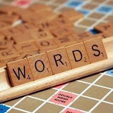

Переваги читання книг для розвитку особистості
Зміст
Вступ
Читання книг — це один з найкращих способів розвитку особистості.
Воно має безліч переваг, які
допомагають нам ставати кращими людьми та розширювати свій кругозір.
Вплив читання на людину
Уява та творчі здібності
В першу чергу, книги розвивають нашу уяву та творчі здібності.
Читання дозволяє переноситися у різні світи, уявляти нові ситуації, героїв і культури, що стимулює
креативність.
Це особливо корисно для тих, хто хоче розвивати власну уяву та знаходити нові ідеї для роботи чи особистого
життя.
Словниковий запас

По-друге, книги допомагають розширювати словниковий запас.
Вони вводять нас у різноманітні теми та
сфери знань, що дозволяє збагачувати мову, робити її більш виразною та багатою.
Чим більше ми читаємо, тим кращою стає наша здатність чітко та грамотно висловлювати свої думки.
Концентрація та пам'ять
Крім того, читання книг допомагає покращити концентрацію і пам'ять.
Читачі, які регулярно читають, звикли зосереджувати свою увагу на тексті, що допомагає тренувати мозок і
зберігати пам'ять.
Книги також розвивають навички аналізу та критичного мислення, адже багато творів вимагають розуміння
прихованих значень і мотивів персонажів.
Мотивація та натхнення
Врешті-решт, книги можуть стати джерелом мотивації та натхнення.
Читання біографій великих людей, історій про подолання труднощів або розвитку нових ідей може надихнути на
зміни в своєму житті.
Багато хто знаходить у книгах поради, які допомагають подолати труднощі і досягти поставлених цілей.